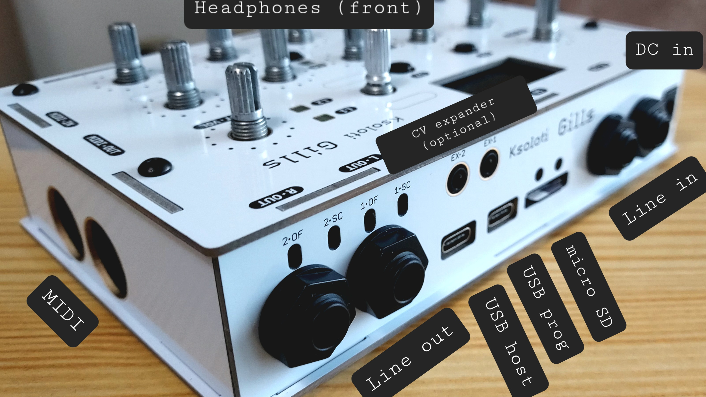

6.1. Gills Build Guide

"Where gills dance in the depths, secrets unfurl like tendrils of the unknown, beckoning the curious to decipher the riddles of existence."
ChatGPT, 2023
First, check out this 3D model of a fully assembled Gills. In the sidebar on the left you can highlight parts and show/hide them.
-
Solder the pin sockets to the bottom of the Gills PCB.
- 1x6-pin socket *1
- 1x3-pin socket *1
- 2x2-pin socket *1
- 2x12-pin socket *2 -
Solder the DC power input jack and then the 5 audio jacks to the bottom of the Gills PCB.
- DC barrel jack *1
- 6.35mm (1/4in) audio jack (NRJ6Fxxx type) *5 -
Now is a good time to solder pin headers to Ksoloti Core if you haven't done so. You can insert the headers into the sockets on the Gills PCB to fix them during soldering and get a good fit. No need to aim for a certain distance, the standoffs will take care of that later. Just solder the headers flush to the PCB surface.
- 1x6-pin header *1
- 1x3-pin header *1
- 2x12-pin header *3If you already soldered any headers other than the ones shown here, no worries - you don't have to remove them to be able to use the Core with Gills.
That's all you have to do on the Ksoloti Core! Put it aside for now.
WIP
WIP
WIP
WIP
WIP
WIP
WIP